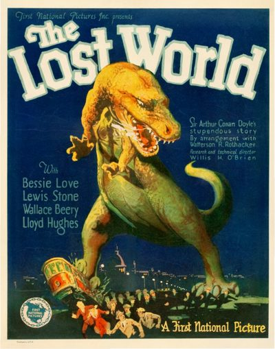

The Lost World
Studio: First National Pictures
Starring: Bessie Love, Lewis Stone, Wallace Beery
Director: Harry O. Hoyt
Writer: Marion Fairfax
Producer: Earl Hudson
The Lost World is a 1925 American silent fantasy giant monster adventure film, directed by Harry O. Hoyt and written by Marion Fairfax, adapted from Arthur Conan Doyle's 1912 novel of the same name.
Watch Online: Internet Archive
Trivia
- Based on The Lost World (novel by Arthur Conan Doyle).
- Willis H. O'Brien had previously, in 1918, worked on a film called The Ghost of Slumber Mountain that used stop motion photography.
- In The Lost World, he combined animated dinosaurs with live-action footage of human beings, but at first he was able to do this only by separating the frame into two parts (also known as split screen).
- As work went on, O'Brien's technique grew better and he could combine live-action and stop-motion footage in the same part of the screen.
Previous Showings
3 Runs • 1 Festival
Original Billings: 2 runs (July 31 - December 28, 1960)
Original Run: July 31, 1960 (Sunday - Monday)
All runs on record (3):
- July 31, 1960 (Sunday - Monday)Michael Rennie, Jill St. John
- December 28, 1960 (Wednesday)Michael Rennie, Jill St. John
- August 23, 2000Summer 2000w/ The Green Goddess